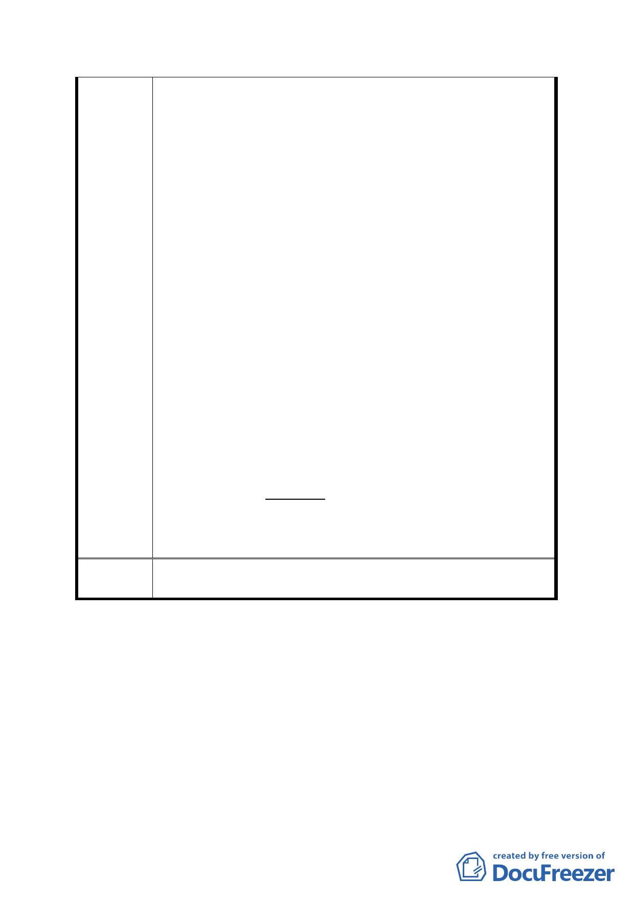

此乃捐地後容積率當然以560％計算之結果，並有監察
院調查報告可稽。今都委會由張副市長一人強行「通過」
解除整體開發之決議，並拒絕依專案小組102年12月10
日小組討論決議就容積率及解除整體開發後因捐地及
捐贈回饋金所受之權利侵害進行討論或附帶建議等，致
使本公司平白遭受容積率與回饋金捐贈，及由威京公司
遭解除整體開發之價值上損害。本公司購買計劃範圍內
土地係屬善意第三人並信任原計畫案內容之行為，豈料
經台北市政府依法公告之都市計劃能說變就變，且都發
局竟於會議圖說內標註計劃範圍內土地為「商三特」及
於擬建議處理的回覆內容中將80年2月13日公告之計畫
書刻意記載為「392％」，造成委員會已審議變更「商三」
為「商三特」及委員會審議原計畫書容積率為「392％」
之假象。前揭會議之決議實已使本公司遭受有鉅大損
害，故本公司對張副張副市長於未、經討論下即強行通
過都發局所提計畫案，及都發局登載不實會議紀錄及補
充資料一事，提出強烈之異議。並祈貴會斟酌各發言委
員有關捐地及回饋問題應合併處理之要求，於本次會議
中詳實記載各委員之提議及未經審議之事項，並釐清都
發局所提出補充資料謬誤之處。
六、綜上，本公司建請將原擬會議紀錄決議部分修改如下：
一、本案開發方式依都市發展局所提修正計畫書及本
次補充會議資料修正通過。
二、（本項刪除）
三、公民或團體陳情意見審決如後附綜理表。
委
決
員會
議
同編號1-b。
貳、報告事項
案由：調整「變更臺北市大安區學府段一小段 62 地號等 19 筆土
地第三種住宅區為第三種住宅區(特)暨修訂第三種商業區
(特)土地使用分區管制細部計畫案」計畫內容提本市都市
計畫委員會報告一案
（因黃委員秀莊為本案設計建築師，已依自行迴避規定先行離席）
-6-